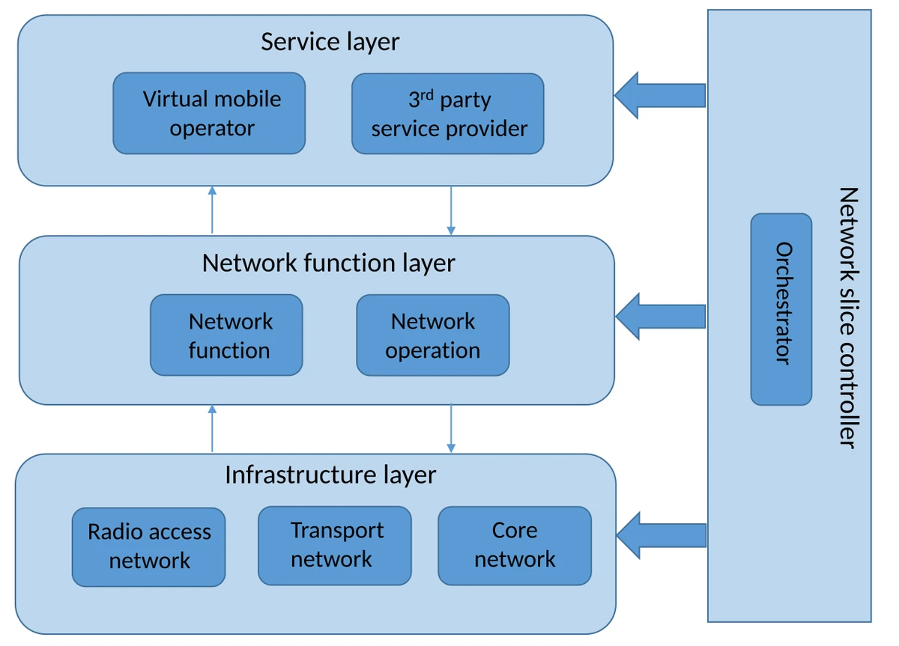
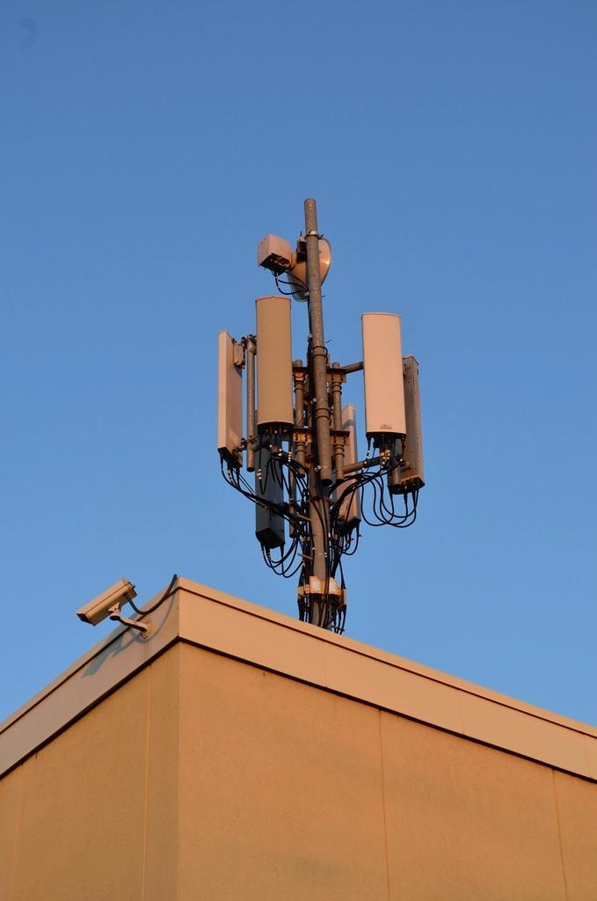
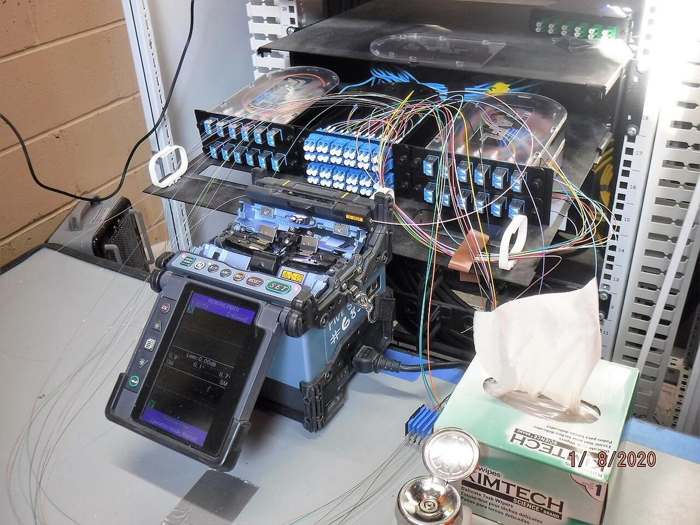
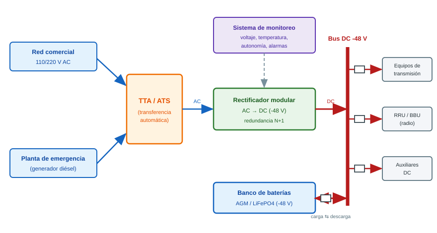
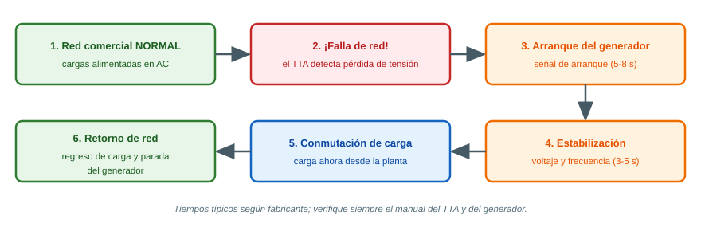
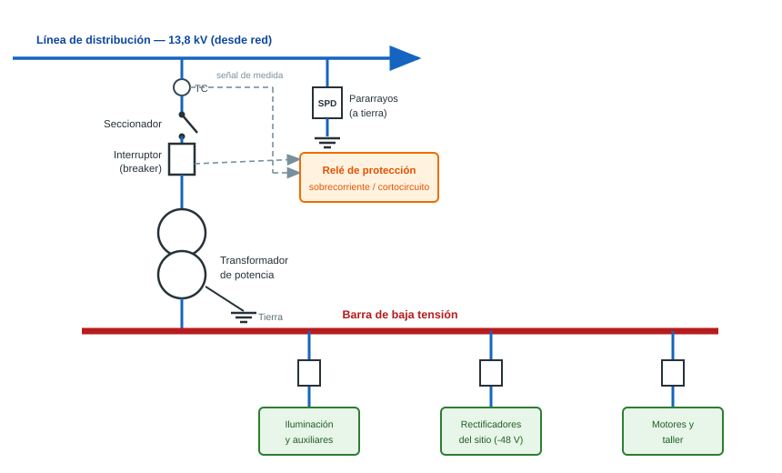
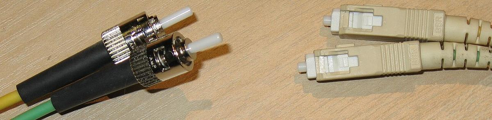
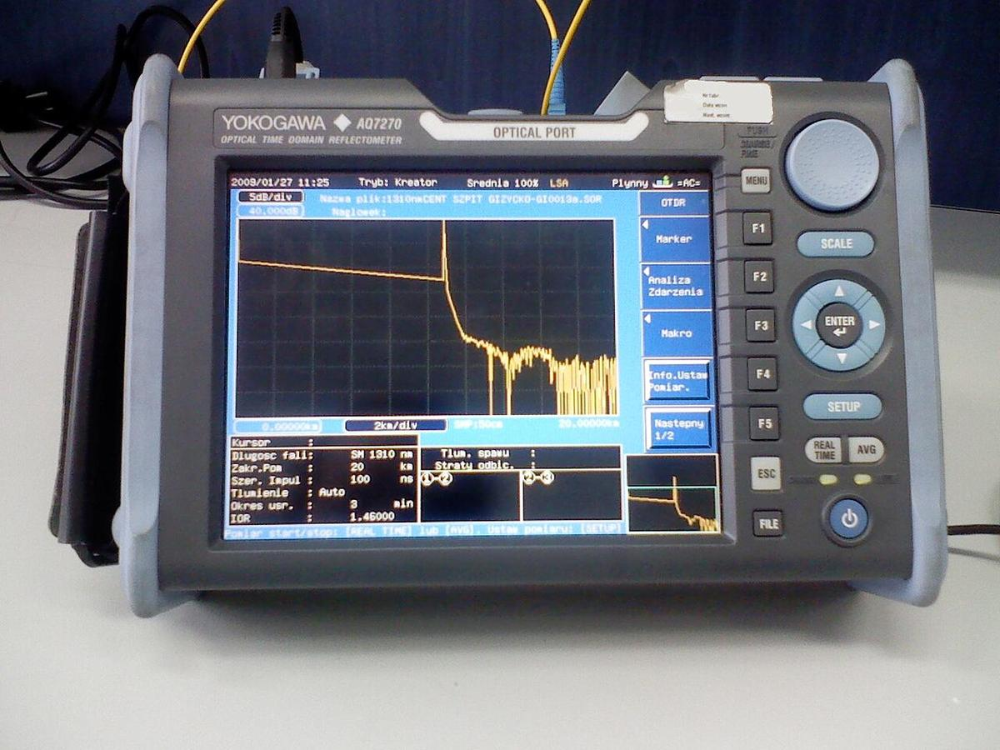
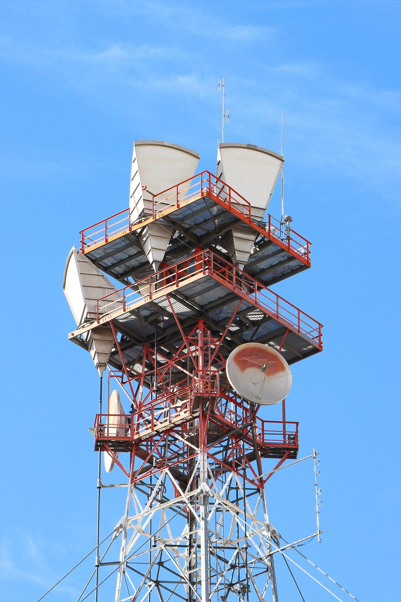

Guía de estudio de telecomunicaciones
Para técnicos de PIMVCA: radiobases y subestaciones
Propósito: ofrecer una base práctica para comprender, inspeccionar, poner en servicio y mantener sistemas de telecomunicaciones asociados a radiobases y subestaciones. Está dirigida a técnicos en formación; no reemplaza planos aprobados, procedimientos internos, manuales del fabricante, permisos de trabajo ni la supervisión de personal autorizado.
Cómo aprovechar esta guía
- Estudie los conceptos en orden y dibuje cada sistema como bloques conectados.
- En una visita, identifique equipos y rutas sin desconectar ni modificar nada.
- Compare mediciones con el diseño, la línea base y los límites del fabricante; no use valores genéricos como criterios contractuales.
- Registre lo observado con hora, unidades, instrumento, punto de medición y evidencia.
- Antes de intervenir, confirme alcance, autorización, impacto y plan de reversa.
PARTE 1 — Conceptos fundamentales
1.1 ¿Qué es una red de telecomunicaciones?
Una red de telecomunicaciones permite que dos o más puntos intercambien información. La información puede ser voz, mensajes, datos de sensores, telemetría, video o alarmas.
Un trayecto sencillo se entiende así:
Fuente → transmisor → medio de transmisión → receptor → destino
- Fuente: genera la información, por ejemplo, un teléfono o un sensor de temperatura.
- Transmisor: adapta y codifica esa información para enviarla.
- Medio: conduce la señal por aire, cobre o fibra óptica.
- Receptor: detecta la señal y recupera la información.
- Destino: equipo o persona que la utiliza.
En una red real hay además nodos que encaminan el tráfico, sincronización, energía, protección, gestión y seguridad. Por ejemplo, una alarma de una subestación puede viajar desde un controlador, por Ethernet, a un router, luego por fibra o microondas y finalmente al centro de operaciones.
Red de acceso, transporte y núcleo
- Acceso: conecta al usuario o dispositivo con la red. En una red móvil, incluye el teléfono y la radiobase.
- Transporte: lleva el tráfico entre sitios. Puede usar fibra, microondas, cobre o satélite.
- Núcleo (core): autentica usuarios, administra sesiones, movilidad y servicios, y conecta con otras redes.
- Gestión: supervisa configuración, alarmas, rendimiento y fallas; suele incluir sistemas de gestión de red y un NOC.
1.2 Señales: cómo se representa la información
Una señal es una magnitud física que cambia con el tiempo y puede representar información. En telecomunicaciones suelen medirse tensión o corriente en un conductor, intensidad de luz en una fibra, o campo electromagnético en el aire.
Tres propiedades iniciales:
- Amplitud: tamaño o intensidad de la señal.
- Frecuencia (f): cantidad de ciclos por segundo, medida en hertz (Hz).
- Fase: posición relativa del ciclo en el tiempo.
El período es el tiempo de un ciclo: T = 1/f. Una onda de 1 MHz tiene un período de 1 microsegundo.
Una señal puede debilitarse por distancia, obstáculos, empalmes, conectores, interferencia o desadaptación. También puede deformarse o recibir ruido. Por eso una medición debe especificar qué magnitud se observó y con qué instrumento.
Analogía útil
Imagine una lámpara que parpadea para enviar un código. La rapidez del parpadeo se relaciona con la frecuencia; su brillo, con la amplitud. El receptor debe distinguir el patrón pese a la distancia y a la luz ambiental. Los sistemas reales aplican modulación, codificación y procesamiento para enviar más información con mayor robustez.
1.3 Analógico y digital
- Analógico: la señal varía de manera continua. Una radio AM/FM tradicional y un micrófono analógico son ejemplos.
- Digital: la información se representa mediante símbolos discretos, normalmente bits
0y1. La voz puede muestrearse, cuantificarse y codificarse en paquetes.
Digital no significa “sin ruido” ni “siempre mejor”. Una señal digital puede funcionar bien hasta cierto límite y luego presentar errores o perder el enlace. En digital se pueden detectar/corregir errores y comprimir información, pero también hay latencia, pérdida de paquetes y dependencia de reloj y configuración.
1.4 Frecuencia, longitud de onda y espectro radioeléctrico
La frecuencia indica cuántas oscilaciones ocurren cada segundo. La longitud de onda λ es la distancia espacial de un ciclo. En el vacío:
λ = c / f, donde c ≈ 300 000 000 m/s.
Ejemplo: a 1 GHz (1 000 000 000 Hz), la longitud de onda es aproximadamente 0,30 m. A mayor frecuencia, menor longitud de onda.
El espectro radioeléctrico es el conjunto de frecuencias usadas para transmitir ondas de radio. Es un recurso limitado y regulado. Las bandas asignadas, los operadores autorizados, los límites de potencia y las condiciones de uso dependen del país y de la normativa vigente. No se debe seleccionar o transmitir en una frecuencia por cuenta propia: consulte la asignación, licencia, diseño y autorización aplicables, incluida la información publicada por CONATEL.
Las bandas más bajas suelen propagarse más lejos y penetrar mejor ciertos obstáculos; las más altas pueden ofrecer más ancho de banda, pero suelen exigir más línea de vista y ser más sensibles a obstrucciones o lluvia. Es una tendencia general, no una regla suficiente para diseñar un enlace.
1.5 Ancho de banda y banda ancha
La palabra ancho de banda tiene dos usos comunes:
- En radio, es el intervalo de frecuencias ocupado por una señal, medido en Hz.
- En redes, suele referirse a la capacidad de transmisión, medida en bit/s, como Mbps o Gbps.
No son la misma unidad. Un canal de mayor ancho espectral puede permitir más datos, pero la capacidad real también depende de modulación, relación señal/ruido, interferencia, codificación, protocolo y carga.
Banda ancha describe una conexión con capacidad relativamente alta y acceso continuo; no tiene una única velocidad universal válida para todos los países y épocas. Para un técnico importa verificar el perfil contratado o diseñado y medir caudal, latencia, pérdida y variación de retardo (jitter).
PARTE 2 — Red móvil celular
2.1 ¿Cómo funciona una red celular?
Una zona de cobertura se divide en áreas atendidas por estaciones radioeléctricas. El teléfono se comunica por radio con una estación cercana; esta estación intercambia señalización y tráfico con la red de acceso, el transporte y el núcleo.
La cobertura no es un círculo perfecto: depende de bandas, potencia, antenas, altura, terreno, edificios, vegetación, carga, interferencia y configuración. Las celdas dibujadas en mapas son una simplificación de un entorno cambiante.
Generaciones móviles
| Generación | Rasgos principales | Qué suele encontrar el técnico |
|---|---|---|
| 1G | Telefonía móvil analógica, voz y seguridad/capacidad limitadas frente a sistemas posteriores. | Equipos históricos; no es la base de redes móviles actuales. |
| 2G | Voz digital (por ejemplo, GSM), SMS y datos de baja velocidad; permite mejor uso del espectro que los sistemas analógicos. | Sitios que aún conservan servicios heredados según el operador. |
| 3G | Datos móviles más capaces y voz sobre tecnologías como UMTS/WCDMA o CDMA2000. | Node B, controladores heredados y transporte IP o TDM, según generación. |
| 4G | LTE y LTE-Advanced; red de acceso OFDMA/SC-FDMA y núcleo de paquetes IP. La voz puede cursarse por VoLTE o, donde exista, por mecanismos de continuidad a otra generación. | eNodeB, EPC, RRU/RRH y enlaces Ethernet/IP. |
| 5G | NR (New Radio), con opciones NSA y SA; puede usar nuevas bandas y una arquitectura de núcleo 5G. | gNB, radio NR y transporte dimensionado para capacidad, sincronización y latencia del servicio. |
Las generaciones pueden coexistir o apagarse por decisión del operador. No suponga qué tecnologías están activas en un emplazamiento: confirme la documentación y el inventario del cliente.
5G NSA y SA
- NSA (Non-Standalone): NR se despliega apoyándose en LTE y el núcleo 4G/EPC; la arquitectura exacta depende de la opción adoptada.
- SA (Standalone): NR se conecta a un núcleo 5G (5GC) y admite capacidades propias de esa arquitectura.
Ver un icono “5G” en un teléfono no permite deducir por sí solo si el servicio es SA, qué banda usa o qué funciones están habilitadas.

2.2 Celda, sector y tipos de sitio
- Celda: unidad lógica de cobertura radioeléctrica asociada a recursos de radio e identificadores de red. Un sitio puede alojar varias celdas.
- Sector: dirección o porción de cobertura atendida por un conjunto de antenas y radios. Un sitio macro habitual puede tener varios sectores, pero no es obligatorio que siempre tenga tres.
- Macrocelda: cubre áreas amplias desde una torre o estructura elevada; puede atender zonas rurales, corredores o áreas urbanas.
- Microcelda: cobertura de escala menor que una macro, útil para reforzar capacidad/cobertura en sectores urbanos o áreas específicas.
- Picocelda: celda de menor alcance, a menudo en interiores o lugares con alta densidad local.
Los términos describen escalas típicas; límites y potencias dependen de la tecnología, el regulador, el diseño y el fabricante.
2.3 Handover y roaming
Handover (traspaso)
El handover transfiere una conexión activa de una celda a otra para mantener el servicio mientras el usuario se mueve o cambian las condiciones de radio.
- El teléfono y la red observan señales y calidad de celdas vecinas.
- Se aplican umbrales, temporizadores y políticas configuradas por el operador.
- La red prepara recursos en la celda destino.
- El teléfono cambia de conexión y la red confirma el resultado.
Un handover fallido puede provocar corte de voz o datos. Puede relacionarse con cobertura, interferencia, vecinos mal definidos, congestión, transporte, sincronización o configuración; la correlación temporal ayuda a encontrar la causa.
Roaming (itinerancia)
El roaming permite que un abonado use una red visitada cuando se encuentra fuera de la cobertura de su red de origen, si existen acuerdos y compatibilidad. La red visitada presta acceso y se coordina con la red de origen para autenticación, políticas y, según el servicio, encaminamiento o facturación.
Diferencia clave: handover cambia de celda durante una sesión; roaming describe el uso de una red visitada por un abonado. Puede haber movilidad entre celdas sin roaming.
2.4 Partes de una radiobase

- Antena: convierte energía guiada por cable/puerto en ondas de radio y viceversa. Importan banda, azimut, inclinación (tilt), polarización, patrón, ganancia y estado físico.
- RRU/RRH (Remote Radio Unit/Head): transmite y recibe radiofrecuencia cerca de la antena; puede incluir amplificación, conversión y filtrado. Los nombres y funciones exactas varían por fabricante.
- BBU (Baseband Unit): procesa banda base y controla funciones de la estación en arquitecturas tradicionales. En arquitecturas modernas puede dividirse en unidades CU y DU, físicas o virtualizadas.
- DU/CU: en una RAN dividida, la Distributed Unit y la Centralized Unit realizan conjuntos distintos de funciones. La partición y la interfaz usada deben confirmarse en el diseño.
- Sistema radiante: antenas, cables/jumpers, conectores, combinadores, RET si existe, soportes y puestas a tierra asociadas.
- Energía y soporte: rectificadores, distribución DC, baterías, climatización, alarmas, protección y puesta a tierra.
- Transporte: interfaz que conecta la estación con agregación/core; puede ser fibra, radioenlace, Ethernet u otro medio.
Fiber splicing (empalme de fibra)

El empalme de fibra une dos fibras para dar continuidad óptica. En fusión, una máquina alinea y fusiona los extremos preparados. El proceso requiere formación, limpieza, protección y control de pérdidas conforme al método de aceptación. “Fibersplicing” no es un equipo de radio: es una actividad de planta externa/óptica que puede conectar la radiobase al transporte.
Nunca se debe mirar dentro de una fibra o puerto: una luz infrarroja invisible puede lesionar el ojo. Antes de inspeccionar, confirmar que está desconectada o usar un detector adecuado; seguir el procedimiento de seguridad óptica.
Fronthaul y backhaul
- Fronthaul: transporte entre unidades de radio y procesamiento de banda base en una arquitectura distribuida. Puede requerir latencia, sincronización y capacidad muy estrictas; no toda fibra de sitio es automáticamente fronthaul.
- Midhaul: término usado para transporte entre funciones DU y CU en ciertas arquitecturas.
- Backhaul: conecta la estación o la red de acceso con agregación y núcleo.
Las interfaces y los límites de cada tramo dependen del diseño (por ejemplo, CPRI/eCPRI u otras opciones). Verifique diagrama, VLAN/IP, sincronización, capacidad y configuración acordada; no intercambie términos como si fueran equivalentes.
PARTE 3 — Medios de transmisión
2.5 Alimentación eléctrica del sitio: esquemas de referencia
Antes de intervenir un sitio, conviene recordar cómo llega la energía hasta los equipos: la potencia entra por la red comercial, se respalda con planta de emergencia y TTA, se rectifica a -48 V DC y las baterías sostienen la carga si todo falla. Cuando el sitio se alimenta desde una subestación, el esquema unifilar explica cómo la energía llega desde la línea de distribución hasta cada carga.
Flujo de energía DC (-48 V) en el sitio

- La red comercial y la planta de emergencia llegan al TTA/ATS, que selecciona la fuente que alimenta el rectificador.
- El rectificador modular (redundancia N+1) entrega -48 V y mantiene las baterías cargadas en paralelo.
- Si se pierde toda la energía AC, las baterías sostienen las cargas hasta agotar su autonomía (típicamente de 4 a 8 h, según el diseño).
- Los fusibles o breakers de cada rama protegen a los equipos ante fallas.
Ciclo de la transferencia automática (TTA/ATS)

Esquema unifilar de una subestación (suministro al sitio)

- El seccionador solo opera sin carga; el interruptor (breaker) abre bajo carga y corta las fallas.
- El relé de protección recibe la señal del TC y ordena el disparo del interruptor ante sobrecorriente o cortocircuito.
- Los pararrayos (SPD) y la puesta a tierra canalizan los sobretensiones (rayos, conmutaciones) hacia el suelo para proteger equipos y personas.
3.1 Fibra óptica
La fibra conduce pulsos de luz por un núcleo rodeado de un revestimiento óptico (cladding). La luz permanece guiada por las propiedades ópticas de ambos materiales. La fibra tiene además recubrimientos y elementos de protección mecánica.

Monomodo y multimodo
| Tipo | Descripción y uso típico |
|---|---|
| Monomodo (SM) | Núcleo pequeño, transmite un modo espacial; es común en enlaces de acceso y transporte de distancias largas. La ITU-T G.652 es una familia ampliamente usada; “OS2” es una clasificación de cableado común. |
| Multimodo (MM) | Núcleo mayor, admite varios modos; común en tramos cortos dentro de edificios o centros de datos. Las clases OM1–OM5 no son intercambiables sin verificar fibra, óptica y distancia. |
Que un conector encaje no significa que la fibra o el transceptor sean compatibles. Confirme tipo de fibra, longitud de onda, velocidad, potencia óptica, conector y presupuesto óptico.
Conectores: SC, LC y ST
- SC: conector push-pull, cuerpo cuadrado, de tamaño mayor que LC.
- LC: conector compacto; común en paneles de alta densidad y transceptores.
- ST: conector redondo con acople tipo bayoneta; aparece en instalaciones heredadas.
Además del formato, identifique el pulido y color según el estándar del sitio: UPC suele tener cara azul y APC verde; APC reduce reflexión y no debe acoplarse con UPC. No fuerce conectores ni acople tipos distintos. Limpie e inspeccione según el método “inspectar–limpiar–inspeccionar”; una cara contaminada puede causar pérdidas o daño permanente.
Atenuación, pérdida y presupuesto óptico
La atenuación es la reducción de potencia a medida que la luz viaja. La producen la fibra, empalmes, conectores, curvaturas, contaminación, defectos y diferencias de adaptación.
El presupuesto óptico, simplificado:
Pérdida total estimada = (atenuación de fibra × longitud) + pérdidas de empalmes + pérdidas de conectores + margen
Margen disponible = potencia de transmisión mínima – sensibilidad de recepción – pérdida total
Las potencias se expresan habitualmente en dBm y las pérdidas en dB. El resultado debe cumplir el presupuesto y los límites del transceptor/diseño. Los valores típicos publicados no sustituyen la especificación de la fibra y del fabricante.
Ejemplo ilustrativo: una ruta de 10 km con atenuación de 0,25 dB/km aportaría 2,5 dB solo por fibra; todavía habría que sumar empalmes, conectores, otras pérdidas y margen. El valor 0,25 es un ejemplo, no un criterio universal.
Medición con OTDR

Un OTDR (reflectómetro óptico en el dominio del tiempo) inyecta pulsos y analiza la luz retrodispersada/reflejada que retorna. El gráfico ayuda a localizar eventos y estimar distancia, pérdidas y reflexión.
Procedimiento conceptual:
- Identifique la fibra, extremos, longitud de onda y ruta; revise el plan de pruebas.
- Inspeccione y limpie conectores; use bobinas de lanzamiento y recepción apropiadas para medir los extremos.
- Configure longitud de onda, rango, ancho de pulso, índice de refracción (IOR) y tiempo de adquisición conforme al cable y al procedimiento.
- Registre el trazado nativo, parámetros, extremos, dirección y fecha.
- Compare con una línea base y criterios aprobados; para aceptación de pérdida extremo a extremo, use el método y medidor de pérdida óptica prescritos, no el OTDR como única evidencia si el procedimiento exige OLTS/power meter.
Una bobina de lanzamiento permite ver el primer conector fuera de la zona muerta; la bobina de recepción ayuda a evaluar el último. Un pulso más ancho puede aumentar el alcance, pero reduce la capacidad de separar eventos cercanos. Un OTDR puede mostrar “ganancia” aparente en eventos entre fibras distintas; por eso no se debe interpretar un solo trazado sin considerar dirección, configuración y método.
Seguridad: no conecte el OTDR a una fibra potencialmente activa sin confirmar compatibilidad y autorización. Verifique primero con un detector/power meter adecuado.
3.2 Enlaces de microondas

Un radioenlace microondas lleva tráfico entre dos puntos usando antenas direccionales. La frecuencia concreta depende del país, la licencia, el plan de frecuencias y la ingeniería del operador. Hay enlaces licenciados en varias bandas de GHz; bandas milimétricas como E-band se usan en ciertas aplicaciones. No se deben asumir canales, potencias o permisos.
Línea de vista y zona de Fresnel
No basta con que ambas antenas “se vean”. La zona de Fresnel es un volumen alrededor del trayecto que debe mantenerse suficientemente despejado. La obstrucción de terreno, árboles o edificios causa pérdidas y puede degradar disponibilidad. El criterio de despeje —a menudo se diseña con una fracción de la primera zona— debe salir del cálculo y del estándar del proyecto.
La alineación requiere orientar azimut y elevación con equipos y método aprobados, buscando el máximo de señal/calidad sin salirse de límites. Una lectura aislada de RSSI no valida por sí sola un enlace: revise modulación, capacidad, BER/errores, potencia recibida, margen de desvanecimiento, interferencia, polarización y alarmas.
Presupuesto y disponibilidad
La pérdida de espacio libre aumenta con distancia y frecuencia. Una fórmula común, con distancia en km y frecuencia en GHz, es:
FSPL (dB) ≈ 92,45 + 20 log10(distancia_km) + 20 log10(frecuencia_GHz)
Es solo un componente del presupuesto: se deben considerar ganancias de antena, pérdidas de guías/cables, conectores, lluvia, obstáculos, desvanecimiento, potencia y márgenes. La recomendación ITU-R P.525 describe el cálculo de atenuación en espacio libre.
La lluvia suele afectar más a frecuencias altas. Una ruta más larga o una banda más alta no se arreglan simplemente subiendo potencia: se revisa ingeniería, despeje, antena, modulación, canal, licencia y objetivo de disponibilidad.
3.3 Comunicación satelital
Un terminal satelital comunica con una estación espacial y una red terrestre. La arquitectura puede incluir terminal, antena, módem, alimentación, segmento espacial, gateway y backhaul.
- GEO: satélite geoestacionario, aparente fijo respecto a la Tierra; gran cobertura, pero alta latencia por la distancia.
- MEO: órbita media; características intermedias de cobertura y latencia, según constelación.
- LEO: órbita baja; latencia potencialmente menor, pero necesita gestionar movimiento, seguimiento y traspaso entre satélites.
El satélite puede ser útil en sitios remotos o como respaldo. La disponibilidad depende de vista al cielo, clima, congestión, terminal, proveedor, energía y capacidad contratada. No se debe fijar una antena sin revisar la ruta, la estructura, la normativa y los riesgos de caída de objetos.
PARTE 4 — Red IP y servicios
4.1 Direccionamiento IP
Una dirección IP identifica una interfaz lógica en una red. En IPv4 tiene 32 bits y suele escribirse como cuatro octetos, por ejemplo 10.20.30.15. En IPv6 tiene 128 bits y se escribe en grupos hexadecimales.
Una dirección se interpreta junto con un prefijo o máscara:
10.20.30.15/24indica que los primeros 24 bits identifican la red.
- La máscara equivalente es
255.255.255.0.
- En esa subred,
10.20.30.0es la dirección de red y10.20.30.255la de broadcast; las direcciones utilizables tradicionales son.1a.254.
- La puerta de enlace es una interfaz del router dentro de esa subred, por ejemplo
10.20.30.1.
Ejemplo de subredes
La red 10.20.30.0/24 puede dividirse en cuatro subredes /26, cada una con 64 direcciones totales y 62 direcciones de host IPv4 tradicionales:
| Subred | Rango de host tradicional | Broadcast |
|---|---|---|
10.20.30.0/26 | .1–.62 | .63 |
10.20.30.64/26 | .65–.126 | .127 |
10.20.30.128/26 | .129–.190 | .191 |
10.20.30.192/26 | .193–.254 | .255 |
Las redes privadas IPv4 reservadas por RFC 1918 incluyen 10.0.0.0/8, 172.16.0.0/12 y 192.168.0.0/16. No se enrutan globalmente por Internet sin traducción/túneles apropiados. En una red operativa, nunca asigne una dirección sin consultar el plan IP: una duplicación puede interrumpir servicios.
4.2 VLAN
Una VLAN separa lógicamente una red Ethernet de capa 2. Puede mantener, por ejemplo, gestión, voz y tráfico de usuario en dominios distintos aunque compartan switches físicos.
- Un puerto access suele transportar una VLAN sin etiqueta al equipo final.
- Un puerto trunk puede transportar varias VLAN con etiquetas IEEE 802.1Q.
- La VLAN debe coincidir de extremo a extremo en los puertos, enlaces y equipos que la necesitan.
Una VLAN no es por sí sola un firewall ni garantiza aislamiento de capa 3. Se requieren enrutamiento y controles adecuados. Documente VLAN ID, nombre, propósito, puerto y extremos según estándar autorizado; no cambie una VLAN para “probar” en producción sin aprobación.
4.3 VoLTE
VoLTE (Voice over LTE) transporta voz como servicio IP sobre LTE, usualmente coordinado por IMS (IP Multimedia Subsystem). El teléfono se registra, establece señalización (por ejemplo, SIP según la arquitectura) y negocia medios de voz; el audio se transporta en paquetes.
Su calidad depende de cobertura y radio, registro IMS, señalización, transporte, calidad de servicio, códecs, políticas y continuidad de movilidad. Una llamada VoLTE fallida no se diagnostica solamente mirando potencia de señal.
4.4 QoS
QoS (Quality of Service) clasifica y trata tráfico según políticas: por ejemplo, dar prioridad a voz en tiempo real frente a una descarga no urgente. Los parámetros de interés incluyen pérdida, latencia, jitter, congestión y disponibilidad.
DSCP es un campo IP usado para marcar clases de servicio. Un valor de marcado no crea prioridad por sí mismo: switches, routers y enlaces deben reconocer y aplicar políticas coherentes. Una práctica común es EF/DSCP 46 para tráfico sensible a retardo cuando la política aprobada lo dispone; no asigne esa marca por cuenta propia.
4.5 MPLS
MPLS (Multiprotocol Label Switching) reenvía paquetes usando etiquetas en una red del proveedor. Los routers del borde pueden asociar tráfico a una etiqueta y los nodos intermedios conmutarla según sus tablas. MPLS puede soportar VPN y clases de servicio, pero no es “más rápido por definición” ni reemplaza el diseño IP.
Para soporte de campo conviene conocer interfaces, estado de enlace, VLAN/IP, ruta esperada, capacidad, alarmas y punto de demarcación. El diagnóstico interno del backbone corresponde al equipo autorizado de transporte/proveedor.
4.6 NOC
Un NOC (Network Operations Center) supervisa servicios y redes, correlaciona alarmas, recibe tickets, coordina respuesta y mide disponibilidad/rendimiento. El NOC y el técnico de campo se complementan:
- El NOC puede observar alarmas, pérdida de comunicación, degradación o eventos simultáneos.
- El técnico valida en sitio energía, cableado, indicadores, ambiente, equipos y mediciones autorizadas.
- Ambos correlacionan hora, alcance, cambios recientes y evidencias antes de concluir la causa.
Una alarma indica una condición detectada; no siempre es la causa raíz. Por ejemplo, “sitio fuera de gestión” puede deberse a energía, enlace de transporte, equipo o configuración.
PARTE 5 — Puesta en marcha y mantenimiento de un sitio
5.1 Antes de iniciar
- Confirmar alcance: sitio, equipos, servicios, ventana, responsable, contactos y criterios de aceptación.
- Revisar información aprobada: planos, diagrama unifilar cuando aplique, diagrama de red, rutas de fibra, inventario, direccionamiento, parámetros RF y procedimiento del cliente.
- Revisar riesgos y permisos: análisis de trabajo seguro, inducción, EPP, condiciones meteorológicas, energía, altura, RF, baterías y control de acceso.
- Acordar impacto y reversa: qué servicio podría afectarse, quién autoriza una interrupción, cómo regresar al estado previo y quién declara el cierre.
- Registrar línea base: alarmas previas, estado de servicio, hora sincronizada, contadores y mediciones disponibles.
No desconecte alarmas, fibras, radios, baterías ni circuitos para “ver qué pasa”. La prueba debe estar autorizada y tener método de reversa.
5.2 Inspección y pruebas previas
Según el alcance aprobado, documente:
- Estado exterior, gabinete, cerraduras, sellos, ventilación, temperatura y humedad.
- Identificación de cables, puertos, tierras, fibras, radios, antenas y fuentes DC.
- Alarmas activas y su antigüedad; no borre ni reconozca alarmas sin autorización.
- Tensión y estado de alimentación en los puntos definidos por personal autorizado.
- Estado del transporte: enlace físico, óptico o microondas, errores, capacidad y sincronización.
- Conectividad IP y VLAN solo con direcciones/credenciales y herramientas aprobadas.
- Prueba óptica o RF con instrumentos calibrados y procedimientos del proyecto.
- Fotografías de referencia antes de intervenir, sin exponer datos sensibles o zonas restringidas.
5.3 Puesta en marcha o cambio controlado
Durante la intervención:
- Verifique el número de serie, modelo, puerto, fibra, radio y ubicación contra el plan.
- Compruebe limpieza, etiquetado, polaridad, tipo de conector, puesta a tierra y alivio de tensión.
- Aplique solo la configuración entregada y aprobada; realice revisión por pares cuando lo exija el procedimiento.
- Haga cambios de uno en uno y anote hora, estado inicial, acción, resultado y responsable.
- Deténgase ante una alarma nueva, discrepancia de plano, parámetro inesperado o impacto no previsto.
5.4 Pruebas posteriores y cierre
- Confirmar que el equipo y sus enlaces están en el estado esperado.
- Comparar alarmas antes/después y justificar cualquier alarma residual.
- Repetir pruebas definidas: conectividad, rendimiento, óptica, radio o servicio de usuario, según autorización.
- Confirmar con el NOC/cliente la recuperación y estabilidad durante el tiempo de observación establecido.
- Registrar mediciones con unidades, punto, equipo utilizado, número de serie/calibración si corresponde, fecha y hora.
- Actualizar inventario, etiquetas, fotografías, rutas y parámetros aprobados.
- Guardar respaldos y trazas en el repositorio autorizado; nunca en un medio personal no aprobado.
- Cerrar el permiso y el ticket solo cuando se hayan comunicado resultados y pendientes.
Alarmas comunes y preguntas iniciales
| Alarma/indicio (nombres varían por fabricante) | Qué revisar primero, sin intervenir fuera de permiso |
|---|---|
| Pérdida de energía/rectificador | Alimentación indicada, estado del rectificador, alarmas de AC/DC y alcance del evento; coordinar con personal eléctrico. |
| Batería baja/falla | Alarmas del controlador, temperatura/estado reportado y eventos recientes; no puentee ni desconecte baterías. |
| Temperatura alta/ventilador | Ambiente, ventilación obstruida, filtros, ventiladores y climatización; no retire protecciones sin autorización. |
| Pérdida de enlace de fibra/LOS | Puerto y latiguillo identificados, alarmas de los dos extremos, actividad de terceros y medición óptica autorizada. No mire la fibra. |
| Pérdida de radioenlace | Energía, alineación/integridad visible, condiciones meteorológicas, calidad y alarmas en ambos extremos; no mueva la antena sin plan. |
| VSWR/alarma de antena o feeder | Alarmas por rama/sector, cambios recientes, conectores y sistema radiante; el acceso en altura y la RF requieren controles específicos. |
| Pérdida de sincronización | Fuente de reloj, estado del transporte y alarmas correlacionadas; comparar con diseño y configuración autorizada. |
| Sitio inaccesible desde NOC | Determinar si afecta gestión, tráfico o ambos; comprobar energía, transporte, router y eventos simultáneos antes de atribuir causa. |
| Alta tasa de errores/congestión | Contadores, capacidad, utilización, errores físicos y QoS; delimitar interfaz y horario del problema. |
Diagnóstico ordenado: describa síntoma → determine alcance → correlacione hora/eventos → compare con línea base → pruebe una hipótesis autorizada → mida después → documente. Una alarma secundaria puede ser consecuencia de una falla anterior.
5.5 Documentación as-built
El as-built representa lo que quedó instalado realmente después de una obra o cambio. Debe actualizarse y aprobarse conforme al proceso de la empresa/cliente. Según el alcance, incluya:
- Identificación del sitio, fecha, revisión, responsables y cambio asociado.
- Diagrama de red y conexiones físicas: equipo, puerto, fibra/par, VLAN, etiquetas y extremos.
- Ubicación, modelo y serial de equipos; antenas, sectores y orientación según formato aprobado.
- Rutas y empalmes de fibra; trazas OTDR y resultados de pérdida pertinentes.
- Enlaces microondas: extremos, banda/canal autorizado, capacidad y mediciones finales.
- Energía, alarmas, puesta a tierra y elementos afectados, documentados por personal competente.
- Direccionamiento y configuración de red en repositorio restringido; no publique claves ni datos sensibles en planos abiertos.
- Diferencias respecto al diseño, pendientes, pruebas, fotografías y aprobación.
Un plano marcado a mano puede servir como evidencia temporal, pero no reemplaza la actualización formal del as-built.
PARTE 6 — Seguridad en campo y buenas prácticas
La prioridad es que las personas regresen seguras y que la red no se dañe. Ninguna meta de tiempo justifica saltarse un control.
6.1 Antes de salir y al llegar
- Confirme autorización de acceso, contacto del sitio, alcance, ventana y plan de emergencia.
- Informe ubicación, equipo de trabajo, hora prevista y mecanismo de comunicación.
- Revise clima, luz, transporte, herramientas, baterías de instrumentos y calibración aplicable.
- Complete inducción y análisis de riesgos; use casco, lentes, botas, guantes, protección auditiva y otros EPP determinados por el riesgo.
- Identifique zonas restringidas, rutas de evacuación, botiquín, medios de rescate y punto de reunión.
- Mantenga orden, evite tropiezos y proteja conectores/equipos contra polvo, humedad y descarga electrostática cuando corresponda.
6.2 Seguridad eléctrica en subestaciones y telecom
- Solo personal calificado y autorizado realiza maniobras eléctricas.
- Respete los límites de aproximación, permisos, procedimiento de bloqueo/etiquetado (LOTO), verificación de ausencia de tensión y puesta a tierra definidos por el operador y las normas aplicables.
- Una etiqueta o interruptor abierto no demuestra por sí solo que un circuito está desenergizado.
- No retire cubiertas ni trabaje dentro de tableros energizados si no cuenta con autorización, evaluación y controles específicos.
- Las baterías pueden entregar corrientes de cortocircuito muy altas; retire joyas, evite herramientas sueltas y use protección prescrita.
- Considere polaridad, arco eléctrico, tensión DC, electrolito, ventilación y posible hidrógeno. No produzca chispas ni cortocircuite terminales.
- No opere en instalaciones de subestación sin coordinación con el responsable eléctrico y el centro de control.
6.3 Altura, torres y antenas
- Trabajo en altura requiere capacitación, permiso, evaluación, sistema anticaídas compatible, inspección y plan de rescate.
- No suba solo ni con tormenta, viento o condiciones fuera del límite aprobado.
- Use anclajes y conectores certificados para el sistema; mantenga herramientas amarradas para evitar caída de objetos.
- Delimite el área inferior y coordine con otros equipos.
- No desmonte antenas ni feeders ni cambie azimut/tilt sin procedimiento, autorización RF y coordinación con el NOC/operador.
- Respete zonas de exposición RF y controles de transmisión. Solo personal designado puede aplicar reducción o apagado coordinado.
6.4 Fibra, láser y herramientas
- Nunca mire directamente a conectores o fibras, incluso si no se observa luz.
- Use microscopio de inspección con seguridad adecuada y confirme que no se observa una fibra activa.
- Recoja los fragmentos de fibra con pinzas y en recipiente específico; no los toque ni los deje sobre la piel.
- Proteja ojos y manos durante corte, pelado y empalme; mantenga residuos lejos de alimentos.
- No use alcohol o limpiadores sin seguir la ficha de seguridad y la instrucción del fabricante.
6.5 Buenas prácticas operativas
- Use credenciales personales aprobadas; no comparta contraseñas ni copie configuraciones con secretos a tickets.
- Verifique dos veces sitio, equipo, puerto y servicio antes de desconectar.
- Etiquete ambos extremos, tome fotos autorizadas, mantenga conectores tapados y cierre gabinetes.
- No conecte memorias USB ni equipos personales a redes operativas sin autorización.
- No cambie firmware, IP, VLAN, potencia, frecuencia ni configuración solo para experimentar.
- Reporte de inmediato incidentes, casi incidentes, pérdida de herramienta, daño o exposición.
- Si el sitio, plano o condición no coincide con lo previsto: pare, asegure el área y escale.
PARTE 7 — Estructura de ticket para fallas de telecomunicaciones
Un ticket útil permite reconstruir lo ocurrido sin depender de la memoria de una persona. Registre hechos observables; separe los hechos de las hipótesis.
| Campo | Qué documentar |
|---|---|
| ID del ticket / prioridad | Identificador, severidad asignada por el proceso y criterio de impacto. |
| Fecha y hora | Inicio, detección, llegada, pruebas, restauración y cierre; indique zona horaria o fuente de sincronización. |
| Reportante / responsable | Nombre, equipo, teléfono/canal y responsable de coordinar. No publique datos personales innecesarios. |
| Sitio y ubicación | Código de sitio, dirección/referencia y equipo al que se accedió. |
| Servicio afectado | Voz, datos, gestión, transporte, telemetría, enlace de subestación u otro. |
| Síntoma observado | Mensaje de alarma literal, LED, pérdida, intermitencia, usuario afectado y desde cuándo. |
| Alcance | Una interfaz, un sector, todo el sitio, varios sitios, un abonado o un servicio. |
| Impacto | Usuarios/servicios afectados, degradación, redundancia disponible y riesgo operativo. Evite estimaciones no verificadas. |
| Estado previo / línea base | Último estado conocido, alarmas previas, mediciones comparables y cambios recientes. |
| Seguridad y permiso | Permiso, análisis de riesgo, responsables, restricciones y confirmación de coordinación con NOC/operador. |
| Equipos e interfaces | Fabricante/modelo/serial, puerto, VLAN, circuito, fibra o radioenlace; use identificadores aprobados. |
| Pruebas realizadas | Paso, herramienta, configuración, punto de medición, hora y resultado con unidades. |
| Evidencias | Fotos autorizadas, captura de alarmas, trazas OTDR, logs o contadores en repositorio aprobado; retirar credenciales y datos sensibles. |
| Acciones realizadas | Qué se cambió, quién lo autorizó, estado previo, hora y resultado. Distinguir cambio de observación. |
| Hipótesis y causa | Hipótesis pendientes separadas de causa confirmada; incluir evidencia que respalda o descarta. |
| Servicio restaurado | Prueba final, hora, duración de observación y confirmación del NOC/cliente. |
| Reversa / contingencia | Aplicada o no, pasos, autorización y estado final. |
| Pendientes | Trabajo requerido, responsable, fecha y dependencia. |
| Documentación | As-built, inventario, respaldo, fotos y revisión actualizados. |
| Cierre y aceptación | Nombre/rol de quien valida, hora y comunicación enviada. |
Ejemplo de descripción inicial
RB-XXX; el servicio de usuario aún no está confirmado como afectado. La alarma comenzó después de una interrupción eléctrica reportada por el operador. No se han hecho cambios. Solicito: confirmar ventana, responsable eléctrico y pruebas permitidas. Evidencia: alarma ..., captura adjunta al repositorio autorizado. Siguiente paso: inspección visual externa y validación coordinada de energía/transporte.PARTE 8 — Prompt profesional para IA en campo
Use una IA como apoyo para ordenar observaciones, preparar preguntas y entender conceptos. No la use como autoridad para maniobras, seguridad, configuración de producción ni diagnóstico definitivo. Los modelos pueden inventar datos, confundir variantes de fabricantes o sugerir pasos inseguros.
Copie la plantilla y reemplace los campos entre corchetes. No incluya contraseñas, claves, datos personales, direcciones IP públicas sensibles, topología restringida ni información confidencial. Use códigos anonimizados si la política de la empresa lo permite.
Actúa como asistente técnico de telecomunicaciones para organizar un diagnóstico. No estás autorizado a ordenar maniobras eléctricas, trabajo en altura, apagado RF, desconexiones, cambios de configuración ni acciones que interrumpan servicios. Si el siguiente paso requiere autorización, especialista o procedimiento del cliente, detente y señálalo claramente. CONTEXTO NO SENSIBLE - Tipo de sitio/equipo: [radiobase / enlace / fibra / red IP / subestación] - Tecnología y fabricante/modelo (si se permite): [dato] - Síntoma observado literalmente: [dato, sin interpretar] - Inicio y zona horaria: [fecha/hora] - Alcance confirmado: [interfaz/sector/sitio/servicio/pendiente de confirmar] - Alarmas tal como aparecen: [texto] - Cambios recientes conocidos: [dato o "desconocido"] - Mediciones: [valor, unidad, punto, instrumento y hora] - Acciones ya autorizadas y realizadas: [lista] - Restricciones de seguridad/permisos: [lista] - Procedimiento/manual aprobado disponible: [referencia, no inventar] RESPONDE EN ESPAÑOL Y EN ESTE ORDEN 1. Resume solo los hechos; separa claramente inferencias. 2. Enumera hasta cinco hipótesis, de más a menos probable, con evidencia a favor, evidencia faltante y una forma segura/autorizada de verificarlas. 3. Indica qué información falta y qué preguntas concretas debo hacer al NOC, supervisor o responsable del sitio. 4. Propón una secuencia de diagnóstico no invasiva. Marca cada paso que requiera permiso, personal calificado, ventana de mantenimiento o coordinación. 5. Di qué no se debe hacer hasta obtener autorización. 6. Sugiere qué registrar en el ticket y qué prueba demostraría la recuperación. 7. Si no tienes certeza o el manual no está disponible, dilo; no inventes umbrales, comandos, pines, frecuencias, direcciones, contraseñas ni valores de aceptación.
Antes de actuar: revise la respuesta contra el manual del fabricante, el procedimiento aprobado y el responsable técnico. La IA no sustituye el NOC, al operador eléctrico, al supervisor, al fabricante ni la formación de seguridad.
PARTE 9 — Recursos de aprendizaje
Documentación oficial y técnica
| Recurso | Para qué sirve |
|---|---|
| PIMVCA | Punto de referencia institucional de la empresa. Para procedimientos, formatos y equipos internos, prevalecen los documentos vigentes autorizados por PIMVCA y sus clientes. |
| CONATEL Venezuela | Información del regulador; consultar normativa y asignaciones vigentes antes de trabajar con espectro. |
| 3GPP — 5G System Overview | Visión general de NG-RAN, 5GC, gNB y despliegues NSA/SA; desde allí se accede a especificaciones como TS 38.300. |
| ITU-R M.2083 | Visión y objetivos de IMT-2020 (5G). |
| ITU-T G.652 | Características de fibra óptica monomodo. |
| ITU-R P.525 | Cálculo de atenuación en espacio libre para enlaces radioeléctricos. |
| The Fiber Optic Association (FOA), guía de fibra | Material didáctico sobre fibra, componentes, instalación y pruebas. Introducción a fibra óptica. |
| IETF RFC 1918 | Rangos IPv4 privados. |
| IETF RFC 2474 | Campo DS y diferenciación de servicios IP. |
| IETF RFC 3031 | Arquitectura de MPLS. |
| Cisco — DSCP/QoS | Ejemplos de marcado DSCP; aplicar solo según política de red. |
| Cisco — MPLS | Introducción a conmutación por etiquetas y servicios MPLS. |
Las páginas de recomendaciones y especificaciones pueden actualizarse o requerir selección de versión. Para diseño, cumplimiento y aceptación, consulte la edición aplicable al proyecto.
YouTube: búsquedas de videos técnicos
Para evitar recomendar un video concreto con título, autor o disponibilidad no confirmados, estos enlaces abren búsquedas temáticas. Priorice material de fabricantes, organizaciones técnicas o instituciones formativas; confirme fecha, nivel y compatibilidad con el equipo del sitio.
Al estudiar, anote el canal, título, fecha, concepto y cualquier diferencia entre el video y el manual de la marca instalada. No replique configuraciones de un laboratorio en equipos de producción.
Repositorios GitHub para laboratorio y lectura
Son proyectos técnicos para estudio/laboratorio; no son manuales de instalación de la red operativa de PIMVCA ni deben conectarse a una red de cliente sin autorización.
- srsRAN Project: implementación abierta de componentes de RAN 5G; sus documentos ayudan a explorar conceptos de CU/DU y NR.
- OpenAirInterface 5G: proyecto de software radio 5G; revisar documentación, requisitos y licencia antes de usar.
- Wireshark: analizador de protocolos útil para aprender Ethernet, IP y señalización en capturas autorizadas. No capture tráfico de terceros ni redes productivas sin permiso.
Videos recomendados para estudiar (serie completa)
A continuación, una serie curada de videos de YouTube, organizada por tema y orden de estudio:
📡 Redes móviles celulares (empieza por aquí)
| Video | Contenido |
|---|---|
| DEL 1G AL 5G: Todas las redes móviles explicadas | Guía definitiva de las generaciones móviles 1G → 6G. Punto de partida ideal. |
| Explicación arquitectura 5G NR y LTE | Componentes y funcionamiento bajo el estándar 3GPP. |
| Arquitectura Core 4G y 5G (UNAD) | El núcleo o "cerebro" de la red móvil. |
| Canal: Aprendiendo Redes Móviles | Canal completo (GSM, UMTS, LTE, 5G); útil como plan de estudio guiado. |
🗼 Radiobases / BTS (aplicación directa al trabajo en campo)
| Video | Contenido |
|---|---|
| Explicación práctica de un BTS (Estación Base) | Qué es y cómo funciona una estación base celular. |
| Instalación BTS Huawei | Instalación real de equipos Huawei en sitio. |
💡 Fibra óptica
| Recurso | Contenido |
|---|---|
| Canal: Fibra Óptica en Español | Curso práctico orientado a técnicos de mantenimiento preventivo. |
| Playlist: Curso GRATIS Instalador de Fibra Óptica | Curso completo de planta externa (empalmes, pruebas, certificación). |
📶 Enlaces de microondas
| Video | Contenido |
|---|---|
| Alineación de antenas — Comunicaciones microonda | Proceso de alineación: azimut, polarización y nivel de señal. |
| Tip para alineamiento de antena microondas | Radioenlace punto a punto: consejos prácticos. |
Orden de estudio sugerido: (1) "Del 1G al 5G" para la visión general; (2) canal "Aprendiendo Redes Móviles" para profundizar; (3) videos de BTS y fibra óptica para la práctica de campo; (4) microondas al trabajar con enlaces de backhaul. Confirme siempre la fecha y el nivel del video antes de usarlo como referencia técnica.
Videos recomendados para estudiar (serie completa)
A continuación, una serie curada de videos de YouTube, organizada por tema y orden de estudio:
📡 Redes móviles celulares (empieza por aquí)
| Video | Contenido |
|---|---|
| DEL 1G AL 5G: Todas las redes móviles explicadas | Guía definitiva de las generaciones móviles 1G → 6G. Punto de partida ideal. |
| Explicación arquitectura 5G NR y LTE | Componentes y funcionamiento bajo el estándar 3GPP. |
| Arquitectura Core 4G y 5G (UNAD) | El núcleo o "cerebro" de la red móvil. |
| Canal: Aprendiendo Redes Móviles | Canal completo (GSM, UMTS, LTE, 5G); útil como plan de estudio guiado. |
🗼 Radiobases / BTS (aplicación directa al trabajo en campo)
| Video | Contenido |
|---|---|
| Explicación práctica de un BTS (Estación Base) | Qué es y cómo funciona una estación base celular. |
| Instalación BTS Huawei | Instalación real de equipos Huawei en sitio. |
💡 Fibra óptica
| Recurso | Contenido |
|---|---|
| Canal: Fibra Óptica en Español | Curso práctico orientado a técnicos de mantenimiento preventivo. |
| Playlist: Curso GRATIS Instalador de Fibra Óptica | Curso completo de planta externa (empalmes, pruebas, certificación). |
📶 Enlaces de microondas
| Video | Contenido |
|---|---|
| Alineación de antenas — Comunicaciones microonda | Proceso de alineación: azimut, polarización y nivel de señal. |
| Tip para alineamiento de antena microondas | Radioenlace punto a punto: consejos prácticos. |
Orden de estudio sugerido: (1) "Del 1G al 5G" para la visión general; (2) canal "Aprendiendo Redes Móviles" para profundizar; (3) videos de BTS y fibra óptica para la práctica de campo; (4) microondas al trabajar con enlaces de backhaul. Confirme siempre la fecha y el nivel del video antes de usarlo como referencia técnica.
PARTE 10 — Medición y KPIs de radio en campo
Los KPI (Key Performance Indicators) son los indicadores con los que el operador mide la calidad de una celda. El técnico debe saber interpretarlos para diagnosticar por qué un cliente reporta "mala señal".
10.1 Magnitudes principales
- RSSI (Received Signal Strength Indicator): potencia total que llega del canal (señal + ruido + interferencia). Se usaba en sistemas legacy (2G/3G).
- RSRP (Reference Signal Received Power): potencia de la señal de referencia LTE/5G recibida, en dBm. Es la referencia para saber qué tan fuerte llega la celda.
- RSRQ (Reference Signal Received Quality): calidad de esa señal considerando interferencia y ruido, en dB.
- SINR (Signal to Interference plus Noise Ratio): relación entre señal útil y ruido+interferencia, en dB. Es el que más afecta la velocidad real.
10.2 Tabla de referencia rápida (LTE/5G)
| Indicador | Excelente | Bueno | Regular | Malo |
|---|---|---|---|---|
| RSRP (dBm) | > -85 | -85 a -95 | -95 a -105 | < -105 |
| RSRQ (dB) | > -10 | -10 a -15 | -15 a -20 | < -20 |
| SINR (dB) | > 20 | 13 a 20 | 0 a 13 | < 0 |
Regla práctica: con RSRP menor que -110 dBm el móvil pierde el servicio; con SINR negativo la interferencia domina y la velocidad se desploma aunque "la señal se vea".
10.3 ¿Cómo se miden en campo?
- Aplicaciones en el propio smartphone (Network Signal Guru, CellMapper, ingeniería de campo).
- Drive tests con equipos de prueba y laptops especializadas.
- Integración y optimización con software del fabricante (ajuste de potencia, tilt eléctrico, orientación de sectores).
PARTE 11 — Herramientas y equipos del técnico de telecomunicaciones
| Herramienta | Para qué sirve |
|---|---|
| Multímetro digital | Verificar voltajes DC (-48 V), continuidad y polaridad en tableros SACC. |
| Pinza amperométrica | Medir el consumo de equipos sin abrir circuitos. |
| Medidor de potencia óptica (power meter) | Medir la potencia óptica en dBm en el extremo de una fibra. |
| Visualizador de fallas (VFL, láser rojo) | Localizar roturas, dobleces o empalmes malos (la luz roja se ve en la fibra). |
| OTDR | Traza completa de la fibra: distancias, pérdidas y eventos (ver PARTE 3.1). |
| Localizador de tono / trazador de cables | Identificar qué cable va a qué extremo en un rack lleno de cables. |
| Llave de torque | Apriete correcto de conectores y tornillería de antenas según especificación del fabricante. |
| Analizador de espectro | Verificar portadoras y potencia en enlaces de microondas. |
| Cámara termográfica | Detectar calentamientos anómalos en conectores, breakers y fusibles. |
| EPP y arnés de seguridad | Casco, gafas, guantes y arnés con línea de vida para trabajo en altura (torres/techos). |
PARTE 12 — Nuevos despliegues y tendencias
- Small Cells: celdas de baja potencia (hasta ~200 m de cobertura) para interiores y avenidas; se instalan en postes, techos y muros. Densifican capacidad sin torres grandes.
- DAS (Distributed Antenna System): sistema de antenas distribuidas conectadas a una única fuente; ideal en estadios, túneles y centros comerciales donde la señal externa no entra.
- Open RAN / vRAN: separación del software (que corre en servidores) del hardware de radio; permite mezclar proveedores y bajar costos. Alternativa a las soluciones integradas de Huawei, Ericsson o Nokia.
- MEC (Multi-access Edge Computing): computación en el borde de la red, cerca del usuario; reduce latencia para video, industria y vehículos.
- RedCap (NR Light): versión "ligera" de 5G para sensores industriales y wearables; menor costo y consumo.
- NTN / Direct-to-Cell: conexión directa entre teléfonos y satélites (LEO) sin torre intermedia; clave para zonas remotas de Venezuela donde no se justifica una radiobase. Varios operadores en Latinoamérica lo están probando (incluido respaldo satelital tras emergencias, como el uso de Starlink en La Guaira).
PARTE 13 — Caso real: la central de Movistar en Venezuela
Comprender el contexto local es clave para el trabajo de campo. Así funciona la "central" de Movistar — legalmente Telefónica Venezolana, C.A. — en el país.
13.1 ¿Qué es una "central" en Venezuela?
En el lenguaje telefónico local, por "central" se entiende la central telefónica: la instalación donde se aloja el equipo de conmutación que conecta las llamadas y los datos. En la era moderna, ese concepto evolucionó hacia centros de operaciones, nodos/core y NOC (Centro de Operaciones de Red).
13.2 La gran central histórica: Centro Nacional de Telecomunicaciones CANTV
Caracas, Avenida Libertador — el "corazón" histórico de las telecomunicaciones venezolanas:
| Dato | Detalle |
|---|---|
| Construcción | 1967-1973 (el Edificio de Equipos opera desde 1967) |
| Tamaño | 63.000 m² sobre un terreno de 14.545 m² |
| Arquitectos | Guido Bermúdez, Carlos Brando, Pedro Lluberes e Isaac Van Praag |
| Composición | Edificio de Equipos + torre administrativa (20 plantas) + estacionamiento (550 vehículos) + zona pública |
| Función | Conmutación, transmisión y administración de la telefonía nacional |
Lección para el técnico: el proyecto separó volumétricamente lo técnico de lo administrativo — el Edificio de Equipos (la central propiamente dicha) es el que recibe climatización, alimentación eléctrica y seguridad reforzadas. Ese es exactamente el tipo de infraestructura crítica que mantiene PIMVCA.
13.3 Movistar Venezuela: historia y presencia
Línea de tiempo:
| Año | Hitos |
|---|---|
| 1991 | Nace Telcel C.A. (luego Telcel BellSouth) |
| 2005 | Telefónica compra los activos el 6 de abril y lanza la marca Movistar |
| 2006 | US$ 300 millones invertidos en infraestructura |
| 2007 | Nueva red GSM con cobertura nacional |
| 2008 | 1.120 radio bases, 209 macroceldas y 106 microceldas; red 3.5G en Caracas |
| 2009 | 295 celdas UMTS; 3.5G en 13 ciudades |
| 2015 | Lanzamiento de 4G+ (bandas AWS 4 y 7), primera vez en el país |
| 2024 | Carrier Aggregation 4G en Caracas |
| 2025 | Inversión de US$ 500 millones para 4G+ y despliegue de 5G en 2 años |
| 2026 | Radio bases 5G en 18 ciudades; lanza Movistar Go (streaming) |
Sede corporativa: Torre Parque Cristal, Av. Francisco de Miranda, Caracas; cuenta con más de 300 puntos de atención a nivel nacional.
Red troncal: más de 3.500 km digitales con microondas, fibra óptica y participación en el cable Panamericano.
13.4 ¿Cómo funciona su "central" hoy?
- Radio bases 4G/5G captan el trÝfico de los usuarios.
- Los enlaces de transporte (fibra, microondas, satélite) lo llevan al núcleo (core).
- El core y el NOC operan en centrales con energía crítica: UPS, rectificadores -48 V, baterías y plantas con TTA (los mismos sistemas que mantiene PIMVCA).
- Si cae una central, cae una región entera: por eso el mantenimiento preventivo y la trazabilidad de los tickets son tan críticos.
13.5 Fuentes consultadas
PARTE 14 — Plan de estudio por semanas
Plan sugerido para ocho semanas, aproximadamente 5 sesiones de 45–60 minutos por semana. Las prácticas se realizan en simulador, material de formación o con equipos aislados y autorización. No se requiere intervenir una radiobase en producción.
| Semana | Enfoque | Actividades | Evidencia de aprendizaje |
|---|---|---|---|
| 1 | Señales, frecuencia, espectro, analógico/digital | Dibujar una cadena de comunicación; calcular período y longitud de onda en tres frecuencias; distinguir Hz de bit/s. | Explicar en una página cómo llega una alarma desde un sensor hasta un NOC. |
| 2 | Redes celulares | Comparar 1G–5G; dibujar UE–RAN–transporte–core; diferenciar celda, sector, handover y roaming. | Diagrama etiquetado de un sitio con tres sectores y anotación de sus límites/supuestos. |
| 3 | Radiobase, antenas y transporte | Identificar antena, RRU, BBU/CU/DU, backhaul/fronthaul y fuentes de sincronización en diagramas de fabricante. | Ficha de inventario didáctica con función y riesgos de cada equipo. |
| 4 | Fibra óptica | Comparar SM/MM; reconocer SC/LC/ST y APC/UPC; practicar cálculo de presupuesto óptico; interpretar un OTDR de ejemplo. | Hoja de cálculo con pérdidas y un trazado OTDR anotado. |
| 5 | Microondas y satélite | Revisar banda autorizada, línea de vista, zona de Fresnel y FSPL; comparar GEO/MEO/LEO. | Presupuesto de enlace de práctica con variables y límites claramente indicados. |
| 6 | IP, VLAN, QoS, VoLTE y MPLS | Subnetear una red de ejemplo; dibujar puertos access/trunk; seguir una llamada VoLTE; leer DSCP/MPLS a nivel conceptual. | Diagrama lógico y plan IP ficticio sin direcciones ni secretos reales. |
| 7 | Mantenimiento, NOC y seguridad | Simular análisis de una alarma; llenar ticket; revisar procedimiento de permiso, LOTO, altura, RF y fibra. | Ticket completo de un escenario simulado con hechos, hipótesis y evidencia. |
| 8 | Integración y repaso | Presentar una falla simulada desde detección hasta cierre; preparar checklist de puesta en servicio y as-built. | Presentación breve, ticket, lista de pruebas y as-built ficticio revisados por un instructor. |
Rutina de estudio recomendada
- Día 1: leer y crear un glosario de diez términos.
- Día 2: dibujar la arquitectura y explicarla sin consultar apuntes.
- Día 3: resolver cálculos o interpretar una medición didáctica.
- Día 4: estudiar una alarma/caso y proponer qué información falta.
- Día 5: repasar preguntas, actualizar notas y plantear dudas a un instructor.
PARTE 15 — Diez preguntas de repaso con respuestas
1. ¿Cuál es la diferencia entre frecuencia y ancho de banda?
Respuesta: la frecuencia, medida en Hz, indica ciclos por segundo. El ancho de banda en radio es el intervalo de frecuencias ocupado; en redes también se usa coloquialmente para la capacidad de datos en bit/s. Hay que especificar el sentido y la unidad.
2. ¿En qué se diferencian una celda y un sector?
Respuesta: una celda es una unidad lógica de cobertura/recursos de radio; un sector es una dirección o porción física de cobertura. Un sitio puede tener varias celdas y sectores, pero la relación depende del diseño y la tecnología.
3. ¿Qué diferencia hay entre handover y roaming?
Respuesta: handover transfiere una sesión activa entre celdas. Roaming permite que un abonado use una red visitada distinta de su red de origen si hay acuerdos y compatibilidad.
4. ¿Qué función cumple una RRU y qué función cumple una BBU?
Respuesta: la RRU gestiona parte de la transmisión/recepción RF cerca de la antena. La BBU procesa banda base y funciones de estación en arquitecturas tradicionales; en diseños recientes las funciones pueden distribuirse entre CU y DU.
5. ¿Cuándo elegiría monomodo o multimodo?
Respuesta: depende de distancia, ópticas disponibles, velocidad, presupuesto y estándar del enlace. Monomodo es común en transporte/distancias mayores; multimodo, en tramos cortos de instalaciones. Se valida con diseño y transceptor, no solo con el conector.
6. ¿Qué puede y qué no puede indicar un OTDR?
Respuesta: puede mostrar eventos reflectivos/no reflectivos y ayudar a estimar ubicación y pérdida a lo largo del enlace. No sustituye automáticamente la prueba de pérdida extremo a extremo exigida, y sus resultados dependen de configuración, bobinas, dirección y estado de conectores.
7. ¿Por qué no basta con ver línea de vista en un radioenlace?
Respuesta: porque obstáculos dentro de la zona de Fresnel pueden degradar la señal aunque las antenas se vean. También deben evaluarse frecuencia autorizada, alineación, capacidad, margen, lluvia/interferencia y presupuesto de enlace.
8. ¿Qué significa 10.20.30.15/24?
Respuesta: una dirección IPv4 10.20.30.15 con prefijo de red de 24 bits, equivalente a máscara 255.255.255.0. La red es 10.20.30.0/24; las direcciones utilizables dependen de las convenciones IPv4 de la subred.
9. ¿Una marca DSCP alta garantiza que una llamada VoLTE tendrá buena calidad?
Respuesta: no. La marca solo identifica una clase; la red debe tener políticas coherentes de clasificación, colas, capacidad y tratamiento extremo a extremo. También importan radio, pérdida, latencia, jitter y señalización IMS.
10. ¿Qué debe hacer si una prueba revela una discrepancia o una alarma nueva durante una intervención?
Respuesta: detener la actividad, no improvisar cambios, preservar el estado y la seguridad, registrar hora y evidencias sin datos sensibles, avisar al responsable/NOC y continuar solo tras recibir instrucciones y autorización según el procedimiento.
Glosario breve
| Sigla | Significado |
|---|---|
| 5GC | 5G Core, núcleo de red 5G. |
| BBU | Baseband Unit, unidad de banda base. |
| CU / DU | Centralized Unit / Distributed Unit en una arquitectura RAN dividida. |
| eNB / gNB | Estación base LTE / estación base NR 5G. |
| EPC | Evolved Packet Core, núcleo de paquetes 4G LTE. |
| IMS | IP Multimedia Subsystem. |
| LOS | Line of Sight; según contexto, línea de vista o alarma de pérdida de señal óptica. Aclare siempre el sentido. |
| NOC | Network Operations Center, centro de operaciones de red. |
| NR | New Radio, interfaz radioeléctrica 5G. |
| OTDR | Optical Time-Domain Reflectometer. |
| QoS | Quality of Service, calidad de servicio. |
| RRU / RRH | Remote Radio Unit / Remote Radio Head. |
| RF | Radiofrecuencia. |
| RAN | Radio Access Network, red de acceso radioeléctrico. |
| VLAN | Virtual LAN, red local virtual. |
| VoLTE | Voice over LTE. |
Referencias de base
Los conceptos de 5G se apoyan en materiales de 3GPP e ITU; las definiciones IP/QoS/MPLS, en RFC de IETF; y los fundamentos ópticos, en ITU-T y FOA. La información regulatoria debe validarse en CONATEL. Las prácticas y umbrales específicos deben obtenerse de los procedimientos vigentes de PIMVCA, del cliente y del fabricante.
Atribución de imágenes utilizadas en esta guía
| Imagen | Fuente / Autor | Licencia |
|---|---|---|
| torre_radiobase.jpg | Rawpixel (vía Openverse) | CC0 (dominio público) |
| arquitectura_5g.png | Xenofon Foukas et al. — Wikimedia Commons | Dominio público |
| conectores_fibra.jpg | Poil — Wikimedia Commons | CC BY-SA 3.0 |
| empalme_fibra.jpg | MTA Capital Construction — Wikimedia Commons | CC BY 2.0 |
| microondas_torre.jpg | Kkiefuik — Wikimedia Commons | CC BY 4.0 |
| otdr_equipo.jpg | Electron — Wikimedia Commons | CC BY 3.0 |
| esquema_dc48v.svg | Elaboración propia (SVG) | Uso libre en esta guía |
| esquema_tta_ciclo.svg | Elaboración propia (SVG) | Uso libre en esta guía |
| esquema_unifilar.svg | Elaboración propia (SVG) | Uso libre en esta guía |
PARTE 16 — Apuntes rápidos del técnico (tablas de bolsillo)
Notas de consulta rápida para campo y estudio.
16.1 Conversión de potencia: dBm y miliwatios
| dBm | mW | Referencia |
|---|---|---|
| 0 dBm | 1 mW | unidad base |
| 3 dBm | 2 mW | +3 dB = doble |
| 10 dBm | 10 mW | +10 dB = ×10 |
| 13 dBm | 20 mW | |
| 20 dBm | 100 mW | |
| 23 dBm | 200 mW | potencia típica de portadora |
| 30 dBm | 1 W | referencia de transmisores |
| 40 dBm | 10 W |
16.2 Fórmulas de campo
- Longitud de onda: λ (m) = 300 / f (MHz). Ej.: 850 MHz → λ ≈ 0,35 m.
- Pérdida en espacio libre: FSLoS (dB) = 32,45 + 20·log(d km) + 20·log(f GHz).
- Radio de la primera zona de Fresnel: r₁ (m) = 17,32 · √(d km / f GHz).
- Distancia máxima con línea de vista (factor k = 4/3): d (km) ≈ 4,12 · (√h₁ m + √h₂ m).
16.3 Pérdidas ópticas de referencia
| Elemento | Pérdida típica |
|---|---|
| Empalme por fusión | < 0,1 dB |
| Conector SC/APC | 0,2 dB |
| Conector SC/PC o LC | 0,3 dB |
| Adaptador (acoplador) | 0,1 — 0,2 dB |
| Curva de fibra (~30 mm) | 0,1 dB |
| Fibra monomodo a 1550 nm | 0,2 — 0,35 dB/km |
16.4 Colores de fibra (TIA-598-C)
Azul, Naranja, Verde, Marrón, Gris, Blanco, Rojo, Negro, Amarillo, Violeta, Rosa y Aqua (color del tubo o "buffer").
16.5 Valores típicos del bus DC (-48 V)
| Parámetro | Valor de referencia |
|---|---|
| Flotación de baterías | 53,5 — 56,4 V |
| Alarma de baja tensión | ~47 V |
| Caída máxima en el bus | 1 — 2 V |
| Ruido de rectificación | < 100 mV pico-pico |
16.6 Diez errores comunes en campo
- Mirar dentro de conectores o fibras activas.
- Conectar fibra sin limpiar e inspeccionar el extremo.
- Instalar un transceptor sin verificar la potencia Tx primero.
- Cambiar configuraciones sin respaldo previo.
- No tomar foto antes y después de la intervención.
- Medir o intervenir sin EPP y sin bloqueo (LOTO).
- Dejar herramientas o tornillos sobre los equipos.
- No verificar la redundancia antes de un mantenimiento.
- Cerrar el ticket sin evidencias ni mediciones finales.
- Confiar en valores "típicos" sin comparar con el manual del fabricante.
PARTE 17 — Anexo A: Infraestructura crítica (guía complementaria)
Esta guía se complementa con la Guía de Estudios de Infraestructura Crítica, Energía y Telecomunicaciones de PIMVCA, que profundiza en conceptos eléctricos, subestaciones, plantas de emergencia y seguridad NFPA 70E.
Disponible en el sitio:
17.1 Resumen de conceptos clave
| Tema | Idea principal |
|---|---|
| Infraestructura crítica | Sistemas cuya caída interrumpe servicios esenciales; exige redundancia N+1 y mantenimiento preventivo. |
| Energía DC (-48 V) | Rectificadores convierten AC en DC; las baterías sostienen la carga en paralelo durante fallas. |
| Radiobases | Sitios con antenas y equipos de radio; requieren energía, climatización y enlaces de transporte. |
| Subestaciones | Transforman y distribuyen la potencia; se protegen con interruptores, relés, pararrayos y puesta a tierra. |
| Plantas y TTA | Generadores diésel con transferencia automática; exigen pruebas periódicas bajo carga. |
| Seguridad (NFPA 70E) | EPP, análisis de riesgo, bloqueo/etiquetado (LOTO) y zonas de arco eléctrico antes de cada trabajo. |
17.2 Prompt profesional para asistente de IA en campo
17.3 Estructura del ticket de trabajo
| Campo | Ejemplo |
|---|---|
| ID Ticket | INC-2026-8842 |
| Tipo / Prioridad | Incidente / Crítica |
| Sitio | Radiobase Guayana Centro |
| Fecha y hora | 15/10/2026 08:30 |
| Sistema afectado | Planta de emergencia / Rectificador / Baterías |
| Descripción | "Fallo de red comercial y caída de tensión en batería" |
| Diagnóstico | "Breaker de entrada AC disparado por pico de voltaje" |
| Acciones | "Medición de aislamiento, restablecimiento, verificación de carga" |
| Repuestos | 1x Breaker 63 A (PN: S263-63) |
| Estatus final | Cerrado |
17.4 Recursos adicionales
- Norma de seguridad: NFPA 70E (Seguridad Eléctrica en el Lugar de Trabajo).
- Documentación de rectificadores: busca el modelo exacto del equipo + "user manual" (ej.: Huawei R48xx).
- Repositorios útiles: huawei-r48xx · power-electronics-studymaterials.
PARTE 18 — Glosario técnico A–Z
| Término | Definición |
|---|---|
| AC (corriente alterna) | Corriente que cambia de dirección periódicamente; la de la red comercial (110/220 V, 60 Hz). |
| Aislamiento | Resistencia entre conductor y tierra; se mide con megóhmetro en instalaciones eléctricas. |
| Alarmas ambientales | Sensores de temperatura, humedad, humo, inundación y apertura de puertas del sitio. |
| ATS / TTA | Transferencia automática de carga: conmuta la alimentación entre red comercial y planta. |
| Backhaul (retaguardia) | Enlace que conecta la radiobase con el núcleo de red del operador. |
| Banda de frecuencia | Rango de frecuencias asignado, por ejemplo la banda de 700 MHz. |
| Baterías de respaldo | Banco que sostiene la carga DC cuando falla toda la energía AC. |
| BBU | Baseband Unit: unidad que procesa la banda base de la señal de radio. |
| Celda | Área de cobertura de un sector de una radiobase. |
| Climatización | Aire acondicionado del sitio: mantiene la temperatura de equipos y baterías. |
| Conector óptico | SC, LC o ST: acoplamiento del extremo de la fibra; el APC evita reflejos. |
| Corriente continua (DC) | Corriente de dirección fija; en telecomunicaciones, -48 V. |
| dB (decibelio) | Unidad relativa de potencia: +3 dB ≈ doble y -3 dB ≈ mitad. |
| dBm | Potencia absoluta referida a 1 mW (0 dBm = 1 mW). |
| EIRP | Potencia efectiva radiada por la antena (potencia + ganancia - pérdidas). |
| Empalme de fibra | Unión de dos fibras por fusión (menor de 0,1 dB) o por acoplador. |
| Enlace de microondas | Transmisión por radio en GHz entre dos torres con línea de vista. |
| Factor de potencia | Relación entre potencia activa y aparente; un valor bajo penaliza la red. |
| Fronthaul | Enlace entre la unidad de radio (RRU) y la BBU, típicamente fibra (CPRI/eCPRI). |
| Frecuencia | Oscilaciones por segundo (Hz); define el comportamiento de la onda portadora. |
| Fusible | Protección contra sobrecorriente: se funde y abre el circuito. |
| Generador diésel | Planta de emergencia que produce AC cuando falla la red comercial. |
| Handover | Traspaso de una llamada o conexión entre celdas sin interrumpir el servicio. |
| Impedancia | Oposición al paso de la corriente alterna (Ω); en RF se usa 50 Ω. |
| LAT / LBT | Línea de aterrizaje a tierra: puesta a tierra del sistema eléctrico y de equipos. |
| LOTO | Lockout/Tagout: bloqueo y etiquetado de energías peligrosas antes de intervenir. |
| Macrocelula | Celda de gran potencia para cubrir amplias áreas. |
| MEC | Multi-access Edge Computing: cómputo en el borde de la red (5G). |
| Microcelula | Celda de baja potencia para cubrir calles o interiores. |
| Microondas | Enlaces de radio (1 - 80 GHz) que exigen línea de vista y zona de Fresnel libre. |
| MIMO | Múltiples antenas emisoras y receptoras para multiplicar la capacidad. |
| MOP / SIT | Maniobra de operación planificada / sitio en trabajo: sección señalizada con bloqueo. |
| Monomodo | Fibra de un solo modo de propagación para larga distancia (9/125 µm). |
| Multiplexor | Equipo que combina varias señales en un solo medio de transmisión. |
| NOC | Network Operations Center: centro que monitorea la red 24/7. |
| ONT / OLT | Terminal óptica del usuario / central óptica de la fibra FTTH. |
| Par trenzado | Par de conductores retorcidos de cobre, usado en telefonía y Ethernet. |
| PIM | Intermodulación pasiva: interferencia producida por uniones metálicas deficientes. |
| Portadora (carrier) | Señal de radio de una frecuencia concreta que transporta datos. |
| Potencia aparente | Producto tensión × corriente (VA); suma de la potencia activa y la reactiva. |
| QoS | Calidad de servicio: priorización del tráfico (por ejemplo, voz sobre datos). |
| Radio base (RBS) | Sitio con antenas y equipos que brinda cobertura móvil. |
| Rectificador | Equipo que convierte AC en DC (-48 V) y mantiene cargadas las baterías. |
| Relé de protección | Dispositivo que detecta fallas y ordena disparar el interruptor. |
| Repetidor | Amplificador óptico (EDFA) o de radio que extiende el alcance del enlace. |
| RSRP | Potencia del portador de referencia recibida (dBm): indica cobertura. |
| RSRQ | Calidad de la señal considerando la interferencia (dB). |
| Ruido | Energía no deseada que degrada la señal recibida. |
| SFP / SFP+ | Módulo transceptor óptico o eléctrico para equipos de red. |
| SINR | Relación señal-interferencia-ruido (dB): define el rendimiento posible. |
| Small cell | Celda de baja potencia para densificar la cobertura. |
| Subestación | Instalación que transforma y distribuye la energía eléctrica. |
| Troncal (backbone) | Enlace principal de alta capacidad entre centrales y nodos. |
| Transceptor | Equipo que transmite y recibe, ya sea por radio u óptica. |
| Tx / Rx | Transmisión / recepción. |
| UPS | Sistema de alimentación ininterrumpida: respaldo de corta duración. |
| VLAN | Red lógica aislada dentro de una red física compartida. |
| WLL | Bucle local inalámbrico: telefonía fija sin cable hasta el usuario. |
| Zona de Fresnel | Elipse alrededor de la línea de vista que debe quedar libre de obstáculos. |
| Zona muerta | Área sin cobertura de una celda. |